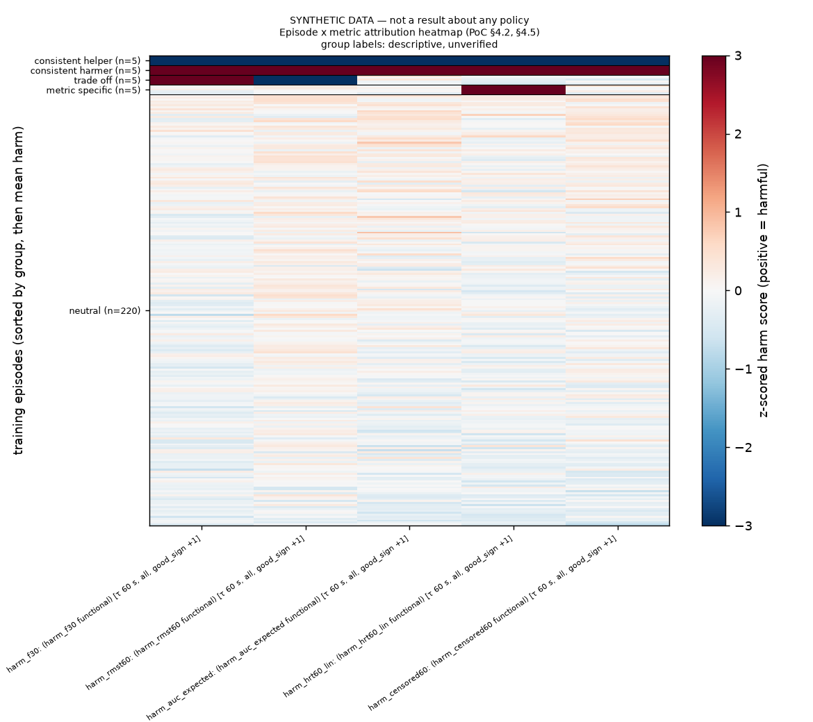

← Training and attribution: checking the ported influence code
S7 · Metric-resolved outputs: four groups, heatmap, scatter, grouping by task
From a table of scores the code now labels each episode (helper, harmer, trade-off, metric-specific or neutral), draws the two figures the spec asks for, and averages scores by any catalog column such as task.
In plain words
The point of the project is to say not just "this recording is bad" but which kind of badness: slows the robot, makes it fail more, or both. The spec asks for an episode-by-metric table, a heatmap of it, and a scatter plot of speed influence against reliability influence with four groups as quadrants: consistent helpers (help on every metric), consistent harmers, trade-off episodes (help one metric and hurt another) and metric-specific ones (move only one).
This story builds that: a labelling rule, an average-by-column function (for example mean harm per task, with an uncertainty range), the heatmap and the scatter. Each figure's axis names the exact quantity and time cap from the declared functionals, and each title says SYNTHETIC when the input is synthetic.
Every figure here is from made-up scores. On a planted test table of 240 episodes with 5 in each group, all 20 planted episodes got the right label and all 220 noise episodes came out neutral. That shows the code labels correctly when the answer is planted; it says nothing about real data, and the labels are descriptive and unverified by design, since a verified claim needs the retraining test in S4.
Terms (z-score, trade-off, family W, Holm, catalog column) are in the report glossary.
Why
PoC §4.2 defines the four groups and the episode-by-metric matrix, §4.5 asks for the heatmap and the throughput-versus-reliability scatter, and §1 and §2.2 ask for aggregation by metadata such as task.
"Results are reported as an episode × metric matrix." — §4.2, p. 9; the four groups are "Consistent helpers / Consistent harmers / Trade-off episodes / Metric-specific"
What was built
| File / function | What it does |
|---|---|
vlapoc/analysis.py::metric_groups | z-scores each harm_ column across episodes, makes a call per metric (+1 harmful, −1 helpful, 0, threshold |z| ≥ 1, an inferred declared parameter), then labels each episode. |
analysis.py::aggregate_by | Mean, bootstrap CI over episodes, and n per group, on any catalog column; refuses a non-catalog column and per-episode identifiers. |
analysis.py::plot_heatmap, plot_tradeoff, axis_label | The two figures; axis labels are built from functionals.json. |
analysis.py::analyze_run, scripts/stage.py::cmd_analyze | A tracked run linking the figures and tables to the score run, with threshold and status as parameters; a CPU job after the ensemble in the chain. |
Acceptance criteria
| AC | Source | Result | Evidence |
|---|---|---|---|
| 7.1 Every planted helper, harmer, trade-off and metric-specific episode gets its label | PoC §4.2 p.10 | met | .venv/bin/python scripts/verify_training_attribution.py --groups → 20/20 planted correct; counts {'neutral': 220, 'consistent_helper': 5, 'consistent_harmer': 5, 'trade_off': 5, 'metric_specific': 5}; 220/220 noise episodes neutral; S7 pass: True (9/9) (re-run now) |
7.2 aggregate_by('task_name'): one row per task, n sums to the rows; refuses a non-catalog column | PoC §1 p.3; §2.2 p.4 | met | 6 rows, n sum 240, each mean inside its CI; refuses not_a_column and episode_id |
| 7.3 PNGs written; axis labels name the functional and τ; titles say SYNTHETIC | PoC §4.4; §4.5 p.11 | met | heatmap 100,695 B, scatter 53,844 B; x: harm_rmst60: RMST(60) = ∫_0^60 (1 - F(t)) dt [τ 60 s = τ_episode, all, good_sign +1]; titles start SYNTHETIC DATA — not a result about any policy |
| 7.4 The analyze run's params carry the threshold and the "descriptive, unverified" status | PoC §4.4 p.10 multiple comparisons | met | z=1.0, group_status descriptive, unverified ..., group_rule_divergence (see below), synthetic True |
Example
On the planted table (synthetic, 240 episodes), five episodes were built to score strongly harmful on every metric, five strongly helpful on every metric, five harmful on speed but helpful on reliability, and five unusual on one metric only. metric_groups recovered all 20 and left the 220 noise episodes neutral. A separate 15-episode fixture run through the real analyze stage produced these counts (random-ish synthetic data, so the mix means nothing): consistent_harmer 2, consistent_helper 1, metric_specific 6, neutral 1, trade_off 5.
Visual

artifacts/s7_tradeoff_planted_SYNTHETIC.png.
artifacts/s7_heatmap_planted_SYNTHETIC.png. (The axis text on this planted render reads "(harm_f30 functional)" where the stage output on the fixture run carries the full definitions; check 7.3b and s7_figure_labels_SYNTHETIC.json show those.)Divergences and limitations
- The "consistent" rule departs from the spec's wording (recorded; the owner may choose the stricter rule). §4.2 reads "Improve every metric" and "Degrade every metric". The code calls an episode a consistent helper or harmer when at least 2 of the 5 metrics make a non-zero call, all of one sign. This is a judgement call (inferred, nothing measured). Its specific risk: two near-redundant reliability readouts (
harm_f30andharm_censored60) can alone make an episode "consistent" while the speed metrics are flat. Stated inanalysis.DIVERGENCE_NOTE, themetric_groupsdocstring and the analyze run'sgroup_rule_divergenceparam. Making it all five is a one-line change. - The labels are descriptive and unverified: §4.4 asks for Holm correction before calling an episode a trade-off, and per-episode tests are not available from 2–3 seeds. The verified claim lives at the intervention level (S4).
- The threshold |z| ≥ 1 is inferred and declared as a parameter.
- The functions live in
vlapoc/analysis.py, notattribution.pyas the plan said, to keep the estimator module about estimation. analyze_runreads catalog rows throughSubset.load(...).episodes(), notopen_for_method: bookkeeping columns of an already-gated training subset, no label access; the boundary scan is clean (7.5).